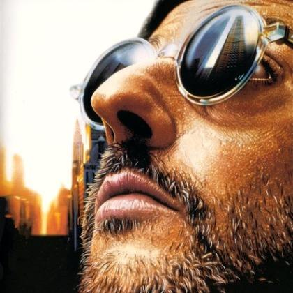

海子死后，一些诗人和作家发表了各种评论，有人认为海子是死于精神分裂，有人认为他是江郎才尽，有人说海子殉情而死，有人说海子的死缘于城市和乡村的矛盾，甚至有人说海子的死是练气功走火入魔，这些说法反映了人们当时对海子之死的关注，也正是这样的说法可见世俗对诗人的无知揣测。一个把生日和忌日选择在一起的人，你如何去说他自杀仅仅是一时冲动?深深阅读他的诗歌，每个有灵魂的人都会发现为什么。
生命是美丽的，生命的意义在于追求幸福，做一个幸福的人，喂马、劈柴，周游世界。做一个热爱生活的人，从明天起，关心粮食和蔬菜。海子用诗句在诠释生命的意义，可在用行动践踏生命。生命是珍贵的，它的珍贵，在于它的平等，每个人都只有一次机会，一旦失去，就不会再有第二次生命。